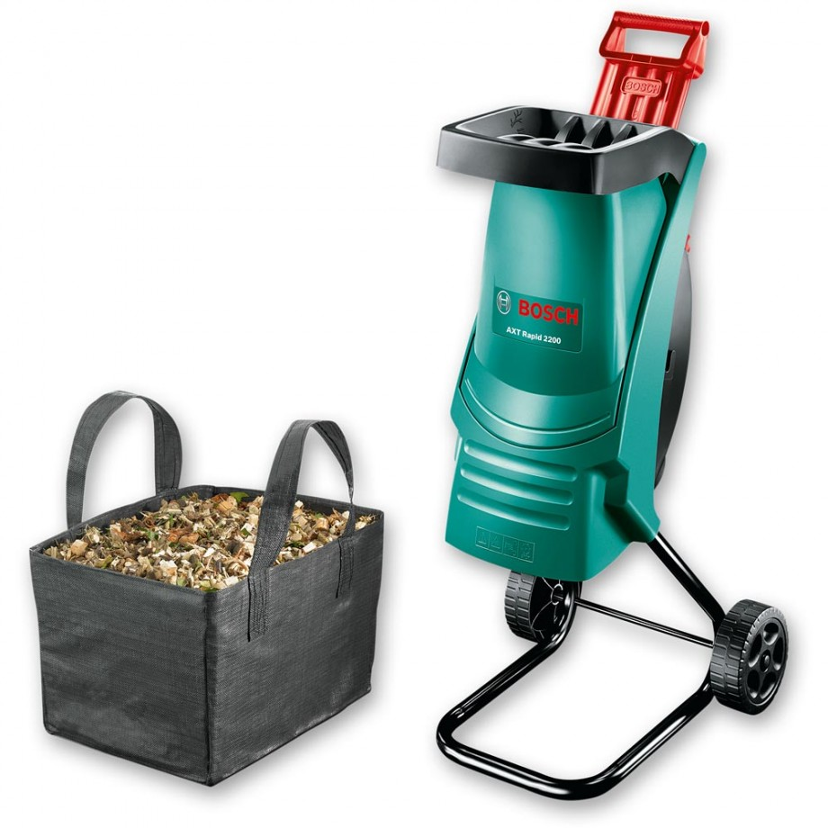

Измельчитель электрический BOSCH AXT Rapid 2000
Описание товара
Садовый измельчитель мусора Bosch AXT 2000 RAPID — прекрасный помощник для наведения порядка на участке. Листья, сучки, остатки корней легко утилизируются, либо могут послужить в измельченном виде удобрением для грядок. Данную модель отличает современный дизайн воронки со встроенным толкателем, заметно увеличивающие скорость работы.
Характеристики товара
- Система измельчения - ножевая
- Материал корпуса - пластик
- Пропускная способность - 80 кг/ч
- Диаметр веток - 35 мм
- Скорость вращения - 3650 об/мин
- Особенности - 11.5 кг
- Тип двигателя - электрический
- Мощность электрического двигателя - 2 кВт
- Запуск двигателя - автоматический
- Напряжение - 220 В
- Количество колес - 2
- Тип двигателя - электрический
- Тип питания - сеть 220 В
Подробное описание товара
Садовый измельчитель мусора Bosch AXT 2000 RAPID — прекрасный помощник для наведения порядка на участке. Листья, сучки, остатки корней легко утилизируются, либо могут послужить в измельченном виде удобрением для грядок. Данную модель отличает современный дизайн воронки со встроенным толкателем, заметно увеличивающие скорость работы.